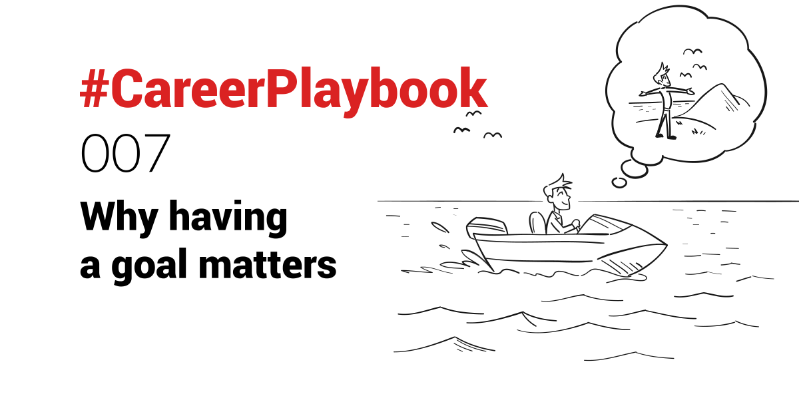

Who has not ever dreaded the “where do you see yourself in 5 years” question during an interview?
I cannot say I had a good answer to that question early in my career.
As I grew into leadership positions though, I understood more and more the need to have a clear long-term goal. One that needs to be articulated clearly to the team.
It helps ensure everyone knows the course, and can be empowered to make the appropriate decisions on a daily basis.
Without a goal, you are just at the mercy of your environment. In reactive mode.
On a boat, you might reach an island by wandering aimlessly, but aiming for one is much more efficient.
The same applies to one’s career.
You can just cruise along in your job, and after years decide to move on (or the decision is made for you 😨) and search for your new opportunity.
But it’s best to set yourself a long-term goal - it will help make decisions as you go. See opportunities for you to learn and grow, that will take you closer to that goal. Opportunities you might not see otherwise.
Perhaps the long-term goal you have includes getting a promotion in your current company. The Jerry Maguire play could unlock it for you (see #CareerPlaybook 004.
Ask yourself:
- Who do you want to be in 5, 10 or 20 years’ time?
- What would you like to be doing then?
- How do you want to feel then?
- What kind of money are you aiming to have?
Take the answers, shape your goal, and make it your north star.
You might not get there exactly, but you will maximise your chances of doing so, by having a clear long-term goal in your mind.
Now, “everyone has a plan, until they get punched in the face”, as Mike Tyson famously said. But having one, is better than having none I find. When I get punched, by life, I just readjust the plan.
PS: don’t beat yourself up if you cannot (yet) figure out your long-term plan. Especially in your 20s. Optimise for learning and personal growth, and see opportunities to do so.